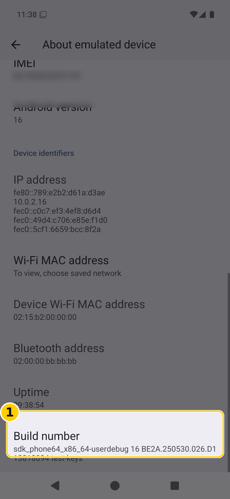
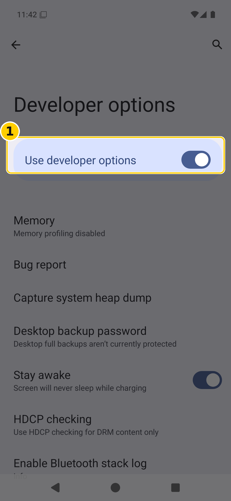
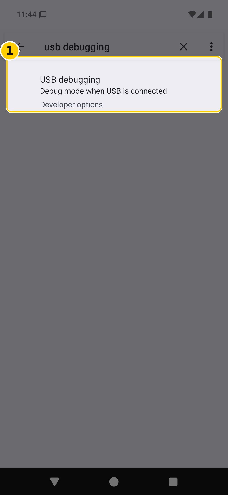
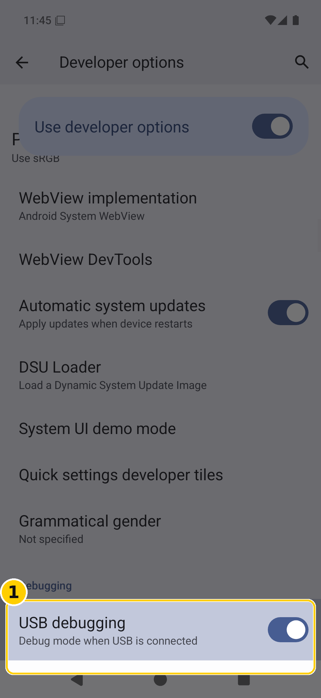
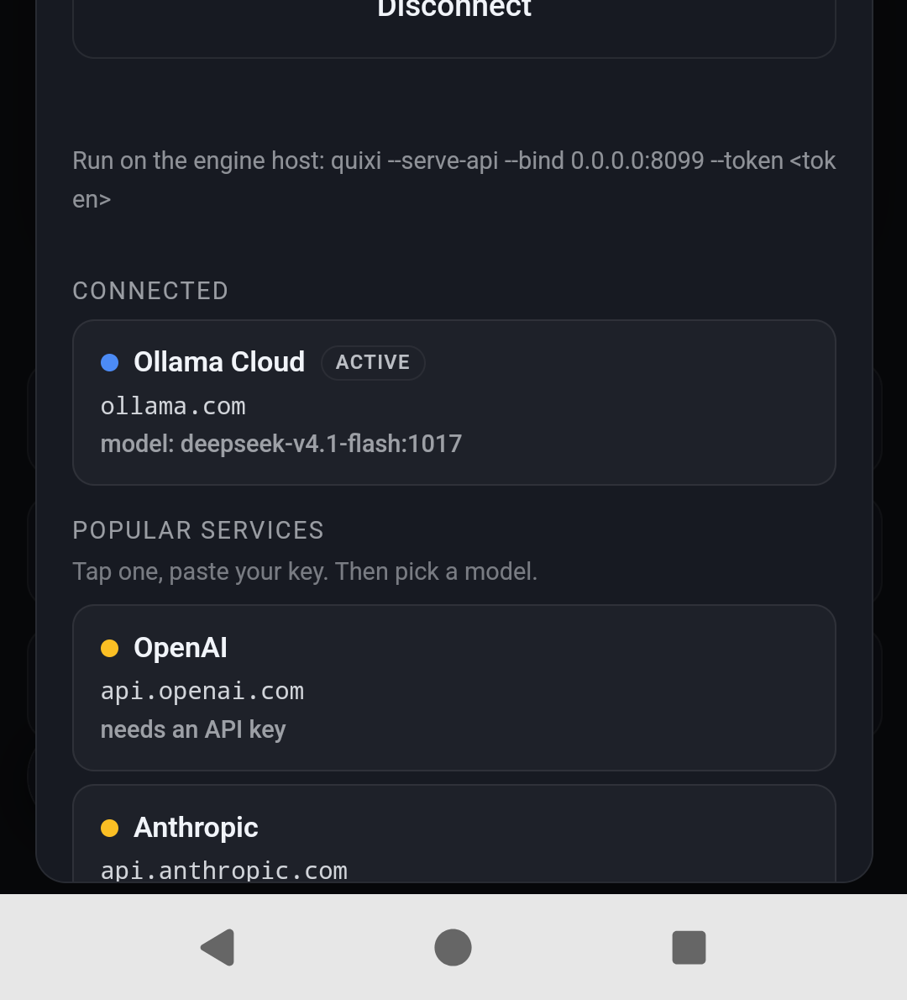
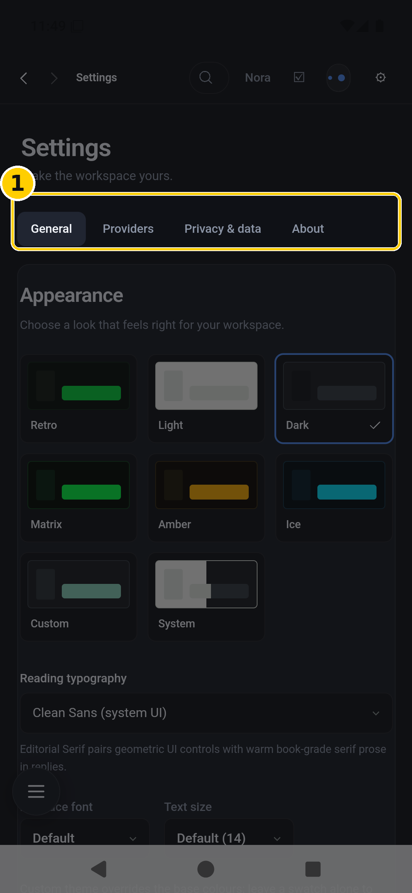

QuixiDesk is one app file. Everything it needs to think, remember, and use tools is inside that file — the engine, the persona, the skills. It does not call home, and it does not need a laptop running in the next room.
Two things it may reach for, and only when you tell it to:
| What | Why, and how much |
|---|---|
| Android 10 or newer | The app draws itself with the phone’s built-in web view. Android 10 is the oldest version with the pieces it needs. |
| About 1 GB free | The app file is about 110 MB; plan for roughly twice that once it is installed. The rest is room for its replies and any files it writes. |
| A model service | A key from one of the services listed inside the app, or the address of your own engine on the same network. |
| Optional: a Proton account | Only if you want mail in the app. The free tier is fine. |
The file ends in .apk. Any of these work; pick whichever you already do.
Wherever it lands, it will be in Files → Downloads.
.apk and this guide there.| File | Use it for |
|---|---|
QuixiDesk-public-arm64.apk | Every normal Android phone made since roughly 2017 — Pixel, Samsung, OnePlus, Motorola, Xiaomi, and so on. |
a build ending x86_64 | Emulators and a few Chromebooks. It will refuse to install on a phone with INSTALL_FAILED_NO_MATCHING_ABIS — that message means you have the wrong file, not a broken one. |
Android blocks apps that did not come from the Play Store until you say otherwise for the app that is holding the file — Chrome, Files, Gmail, whichever it is.
.apk file.adb install. If your file will not install and nothing on the warning mentions Auto Blocker,
that is what is stopping it. Turn Auto Blocker off for the install, and turn it back on afterwards if you
want it — the app does not need it off once installed.Play Protect may offer to scan the file. It is fine to let it, or to continue without scanning. When it finishes, tap Open.
First launch takes a few seconds longer than later ones: the app writes its persona and its skills into its own storage. You will see a greeting screen with a box at the bottom that says “You gonna talk to me or what?” — that is the app, ready.
“Developer options” is a hidden settings menu that Android keeps out of the way. Everything in parts 7 and 8 lives there. Turning it on changes nothing by itself — it only makes the menu visible.
On Samsung it is Settings → About phone; on Pixel it is Settings → About phone → Device details. Scroll to the very bottom, past the network details, until you see Build number.

Tap it seven times in a row. After the third tap Android starts counting down: “You are now 4 steps away from being a developer.” Keep going. When you reach zero it says “You are now a developer.”
Settings → System → Developer options (Samsung: Settings → Developer options). Make sure the switch at the top, Use developer options, is on.

This is what lets a computer (or a person helping you) look inside the phone: read the app’s log, copy its files out, install a newer build over the top without losing anything. On its own it does nothing.
Developer options is a long list. Rather than scrolling, use the search at the top of Settings:

Type “usb debugging” into Settings’ search box. One result appears, labelled Developer options. Tapping it lands you straight on the row with the switch to flip.
This works on every Android version that has the menu, which makes it the most reliable instruction in this guide.

Same menu, a few rows below USB debugging. This lets a computer on the same Wi-Fi talk to the phone with no cable at all — which is how the phone gets updated while it sits in a pocket.
192.168.1.50:37105 and a six-digit code.adb pair 192.168.1.50:37105 and type the code when asked. From then on the computer connects with adb connect 192.168.1.50:5555.Android aggressively closes apps that are not on screen. An assistant that gets killed in the background forgets what it was doing, so give it an exemption.
The app ships with its engine and its persona, but a model — the thing that composes sentences — is yours to point at. Open the gear at the top right of the app.

If you run your own engine on a computer at home, use the Server and Engine token fields at the top instead of a service key: the address looks like http://192.168.1.50:8099, and the token is the one that machine was started with.

Email is optional. When you ask the assistant to read your mail the first time, the app opens the mail website inside itself and waits for you to sign in.
If the phone is going to be used in a car, Android Auto has its own hidden developer menu. You need the Android Auto app installed and the phone connected to the car once before these options appear.
| What you see | What it means, and what to do |
|---|---|
| “App not installed” | An older copy is already there. Uninstall the old one first, or install the newer file over the top — your conversations and persona are kept. |
| “Install unknown apps” is empty | Normal. Tap the .apk first; the app holding it then appears in that list. |
| It opens but will not answer | No model service is connected. Gear → pick a service or enter your own server. |
| It answers, then forgets | Android is killing it in the background. Part 9. |
| Mail says it cannot read the inbox | You are signed out of the mail site. Ask it to check mail again; sign in on the page it opens. |
| The screen goes blank after tapping mail | The mail site is loading. If it stays blank for more than a minute, force-close the app and reopen; the conversation is still there. |
| Everything looks tiny | The app is designed for a phone screen; if text is small, raise Settings → Display → Font size in Android rather than zooming the app. |
This part is written for the AI itself, or for whoever is helping it. The rest of the guide is for a person holding the phone.
# the app package (release / debug builds differ only in the suffix) org.quixidesk.android org.quixidesk.android.debug # its private state — persona, skills, workspace, mail bridge token /data/user/0/org.quixidesk.android/state/persona.md /data/user/0/org.quixidesk.android/state/skills/ /data/user/0/org.quixidesk.android/state/workspace/ /data/user/0/org.quixidesk.android/mail-bridge.token # 0600, loopback only # the UI it draws, inside the APK assets/resources/ui/ # app.js, app.css, mobile.js, human.js assets/resources/persona/nora-public.md assets/resources/bundled-skills/
# toolchain (this machine) JAVA_HOME=$HOME/jdk21 ANDROID_HOME=$HOME/Android/Sdk NDK=$ANDROID_HOME/ndk/RUSTUP_HOME=$HOME/win-cross/rustup CARGO_HOME=$HOME/win-cross/cargo # the app builds its own engine first: quixi-mobile is a static library inside the APK cd /quixidesk-android ./build-apk.sh arm64 release # or: ./build-apk.sh x86_64 debug (emulator) # artefact lands in dist/ adb install -r -d dist/QuixiDesk-arm64-release.apk
Cross-compiling the engine needs the NDK linker explicitly, or cargo silently uses the host compiler and the link fails:
CARGO_TARGET_AARCH64_LINUX_ANDROID_LINKER=$NDK/toolchains/llvm/prebuilt/linux-x86_64/bin/aarch64-linux-android24-clang
# the three streams that matter adb logcat -s app_lib:* Tauri/Console:* RustStdoutStderr:* AndroidRuntime:E adb logcat -d | grep -E 'FATAL|Uncaught|mail driver install|persona ' # what the app thinks it is doing right now adb shell dumpsys window | grep mCurrentFocus adb shell dumpsys activity activities | grep mResumedActivity # drive the UI from a machine (no touchscreen needed) adb shell am start -n com.android.settings/.Settings\$DevelopmentSettingsActivity adb shell uiautomator dump /sdcard/ui.xml # NOTE: fails with "could not get idle state" on # some builds; fall back to screencap + eyeballs adb exec-out screencap -p > shot.png # the app's own webview, for inspecting the interface adb forward tcp:9455 localabstract:webview_devtools_remote_$(adb shell pidof org.quixidesk.android.debug) curl -s http://127.0.0.1:9455/json # list targets before attaching
adb logcat -c && adb logcat | grep -E 'FATAL|dlopen|UnsatisfiedLink' # state reset without uninstalling (loses persona edits, keeps the app) adb shell pm clear org.quixidesk.android # a build that must not be debuggable, installed beside the release one adb install -r -d dist/QuixiDesk-arm64-debug.apk
This is how the phone and a home computer keep the same memory. It works now, and it is deliberately boring: a small program on the PC, a folder on each machine, and one rule — the newer copy wins, and the older one is never deleted.
quixidesk-sync somewhere permanent, for example C:\QuixiDesk\sync.windows\start-sync-server.cmd in Notepad and change TOKEN to a long random string. Keep a copy of it.start-sync-server.cmd. A window opens and stays open — that window is the sync service.%USERPROFILE%\QuixiDesk. Memory, persona and preferences live there, and that is the folder to back up.The phone needs two values — the computer’s address and that token — written into a small file in the app’s own storage:
{
"url": "http://192.168.1.50:8788",
"token": "the-same-long-string"
}
Whoever sets the phone up writes this once. After that, the app syncs every time it opens — no button, no schedule. A manifest of file hashes is a few hundred bytes, so the phone can check every launch and only move what actually changed.
| Syncs | Never syncs |
|---|---|
| Memory (what it knows about her) | Passwords, API keys, sign-ins |
| The persona | Conversations in progress |
| Preferences | Workspace files, artifacts, scratchpads |
Nothing is lost. The version that lost is saved next to the winner, named <file>.conflict-<machine>-<time>. It stays until someone deletes it, so a bad merge is always recoverable by hand.
Run against a real phone, in both directions: three memory files uploaded from the phone, a newer persona pulled down, an edit made on the computer then pulled on the next pass, and a second run immediately after moving nothing at all — which is what “converged” looks like:
pass 1 pushed 3 · pulled 1 · errors 0 pass 2 pushed 0 · pulled 0 · errors 0
Every step here is reversible, and none of them need a computer.
| To undo | Do this |
|---|---|
| Developer options | Settings → System → Developer options → turn Use developer options off. The menu hides; nothing else changes. |
| USB debugging | Same screen, slide USB debugging off. Turn this off whenever you are not using it. |
| Wireless debugging | Same screen, slide it off. Any computer that was paired loses access immediately. |
| Install-from-this-source permission | Settings → Apps → Special access → Install unknown apps → the app you allowed → turn it off. |
| Battery exemption | Settings → Apps → QuixiDesk → Battery → back to Optimised. |
| The app and everything in it | Long-press the icon → App info → Uninstall. Its persona, skills, conversations and saved sign-ins go with it. |